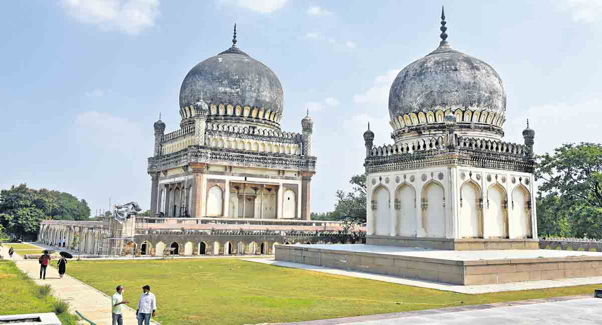
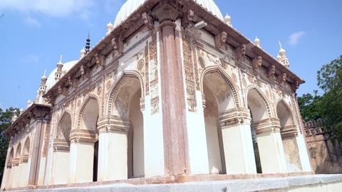
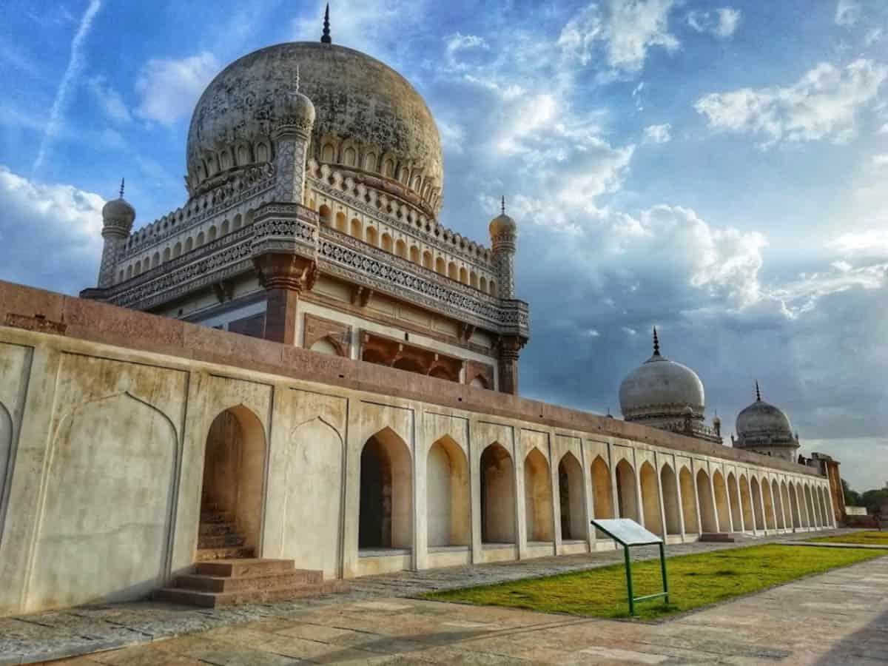
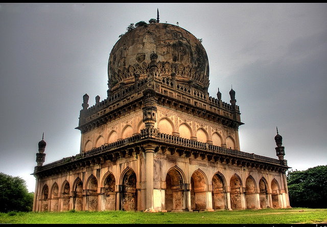

|  |  |  |  |
|---|
Erected in the memory of the departed kings of Golconda, they are magnificent monuments that have withstood the test of time and nature’s vagaries. They are located one kilometer north of Golconda Fort’s called Banjara Darwaza. They are imposing marvels of architectural excellence that stand as the reminders of the glory of Golconda kings who are buried at the same spot. Built by the Qutub Shahis, these tombs are considered to be among the oldest historical monuments of Hyderabad.
These tombs are present in a large group on a raised platform. They resemble Persian, Pathan and Hindu architectural styles that makes use of grey granite, with stucco ornamentation and is a one-of-its-kind place in the world where the whole dynasty is buried at a single spot. They lie amidst beautifully landscaped gardens with intricately carved stonework.
The Tombs form the most reliable evidence of the Qutub Shahi dynasty and their architectural traditions. These are exquisite structures where every arch, columns, dome minarets, and galleries were created with finessed and are surrounded by landscape gardens called Ibrahim Bagh. It houses seven tombs dedicated to the former kings of Golconda. The tombs are dome like structures built on a square base. This is again surrounded by pointed arches. Each tomb is of quadrangular shape and rises around 9 to 15 meters above the terrace. The smaller tombs constitute single stories while the larger tombs are seen as two storied. The domes actually constituted of blue and green tiles, whereas only few pieces exist now. The Qutub Shahi Tombs are surrounded by enchanting minarets and there is magnificent tomb with a height of 42.5 m covered by large dome. The tombs were furnished with chandeliers and soft canopies on silver poles. These are the splendid mausoleums of the Golconda Sultans. During the Qutub Shahi period, legend says that these tombs were of great significance that even criminals taking refuge there were given pardon. The tombs were neglected after their reign until Salar Jung III took up their restoration works during the early 19th century. Today it is maintained well by the Department of Tourism with due focus on heritage preservation and restoration. It is a popular destination in the tourist circuit of Hyderabad and visitors coming to Golconda fort donot miss the tombs, which are marketed as a clubbed destination.
Qutub Shahi tombs are located at a distance of nearly 12 km from Hyderabad and is accessible by road.
All Days of the Week : 9:30 AM to 4:30 PM